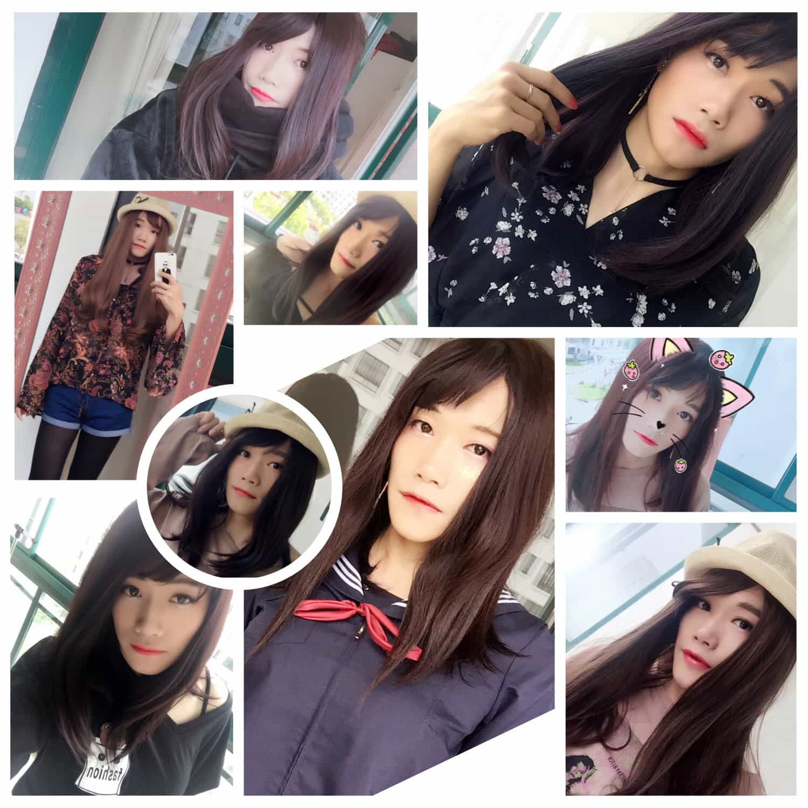
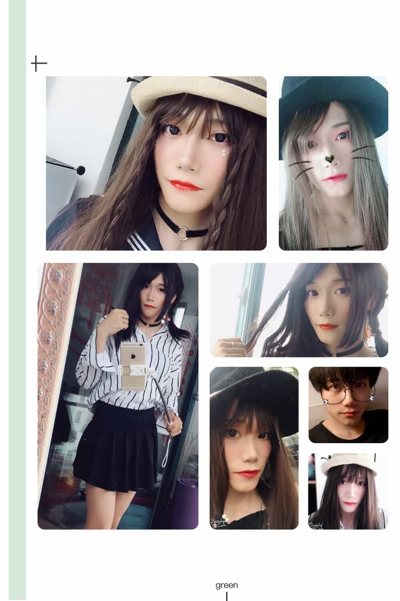
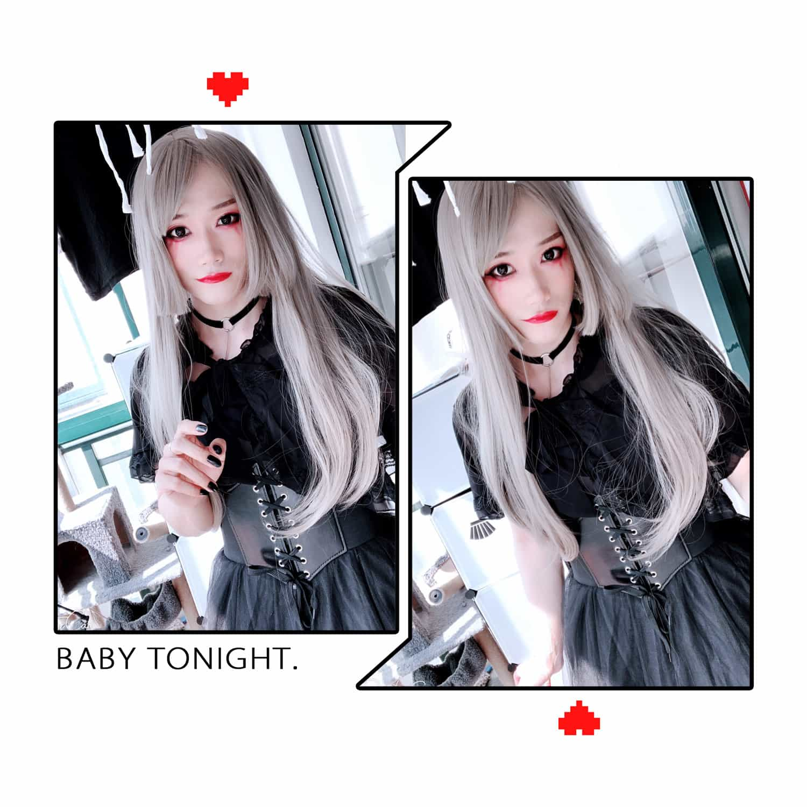
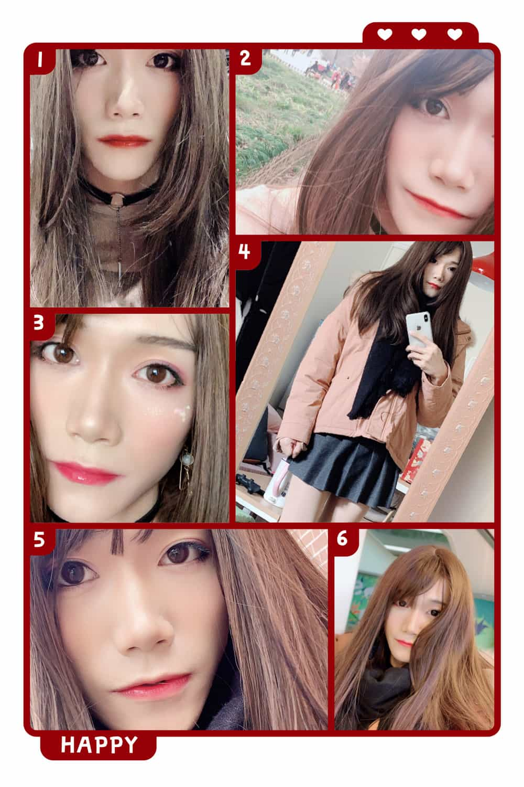

女装之路 — 完全大揭秘
一转眼，距离入坑已经过去了2年多。总觉得是时候应该写点什么来把曾经的故事和经验留存下来。本系列将分为两个部分：第一部分为过去的经历，这里我将讲述从入坑到现在这期间发生的事情以及“升级”的过程；第二部分（暂无计划更新）为经验总结，在这部分内容里，我将介绍这两年来我通过实践积累下来的女装经验，以减少后人的入坑成本。世界每天都在变化，而唯一不变的是保持生活新鲜感的好奇心。
女装的过程总结下来，其实就是以本体性别（男性）的视角来“观察”另外一个自己。女装之后的个体其实是在本体世界观、价值观的潜意识背景下，由本体所“脑补”出的另一个自己。或者也可以说是自己对另一性别在潜意识下的认知。比如当我女装时，我会完全以自己所认为的女性思考和行为方式来生活，比如上楼梯会习惯性地按住裙子、吃饭会变得更加优雅、走路会不自觉地放慢速度以及变得更加爱自拍等等。需要注意的是，所有这些习惯上的改变不是我刻意而为之，也并不是由于紧张、害怕等外界环境压力导致的。而是完全按照自己的主观意识来行动的，简单点讲就是自恋。
说了一堆“理性分析”和脑补的总结，让我们来缕下时间线。首先声明，本文中出现的所有照片均是由“美颜相机”在默认美颜等级下直出的，后期再没有任何修片的过程（好了可以了，美颜相机已经很过分了）。按照能够找到的照片拍照时间来分析，第一次的女装经历是在2017年的2月份。还记得当初有这个想法是因为在网上看到了别人的女装视频，完全趋于好奇心（自己女装的样子）的冲动，从淘宝购买了人生第一个（新手）化妆品套装。然后凭借着自己对化妆步骤的浅显认知，开始在脸上“揉搓”了起来。这两年的经历大致可以分为如下几个阶段：
新手期
这个时期的我是处在完全不会化妆、不会挑衣服，更不会也不可能出门的阶段。其实最早应该是在2016年的12月份，寒冷的冬天大家都会穿的很多，索性买了一顶假发和呢子大衣开始半夜里戴着口罩在外面闲逛。可能大多数人认为，戴着口罩穿着女生的衣服上街，这就已经是所谓的“女装”了。但是请扪心自问，你和街上正常的妹子还有多少差距？不仅仅满足于“女装”，穿衣服很简单，但想体验作为一个妹子的生活是什么样的感觉却没那么容易。女装之后还有“女妆”。下图左下角这张照片是我能找到的仅有的两年前第一次化妆后的样子。
可以清楚地看到，没有修剪过的眉毛、“跨越天际”的外眼线以及超级显黄的口红色号。彼时的我对化妆品的认知只有：淘宝新手装配套的 BB 霜、口红、眼线笔以及眉笔。虽然化妆技术和穿衣风格都不行，但恰巧脸皮还算厚。在这之后的一个月，天气渐暖，褪去毛呢大衣，便决定开始不戴口罩出门溜达了。上图右上角的照片是2017年3月26日出门前的自拍。因为不想戴帽子，但假发本身戴起来又会显得头很“扁”，索性便扎了一个“所谓”的半丸子头。
新手期的时间其实很短，从2016年底持续到2017年的4月末。这一阶段的主要特点就是“随性”。没有集中研究过化妆的标准步骤和手法技巧，也没有进购独立的化妆品单品，旧的淘宝新手套装翻来覆去地使用。唯一有长进的，可能就是脸皮的厚度了。从刚开始女装上街时十分在意旁人的眼光，到后来开始放肆地随意闲逛，“白天女装步行上街”这一初级任务便看似简单地完成了。还记得当初第一次女装坐地铁时紧张到不行，以至于站在一个角落后便动也不敢动了。用余光看了下旁边的人都在用奇怪的眼神看着我（因为当时把自己包的比较严实，穿着不太符合季节）。还好最后在口罩的帮助下，顺利回到了家 ﾍ(;´Д｀ﾍ)。
成长期
“成长期”是从2017年4月我搬家后一直持续到2018年4月底的这12个月的时间。这段时间横跨了春、夏、秋、冬共四个季节，我开始学习基本的化妆知识，购买了一些爆款的化妆单品，比如“纪梵希（Givenchy）”的四宫格散粉、CANMAKE 便宜好用的高光阴影等等。开始注意细节的打扮，比如佩戴 Choker、耳坠、手链，涂指甲、戴帽子以及喷香水。下图是我在这段时间选出的比较有代表性的9张照片。

成长期直到后期18年初的时候才开始注意定期修理眉毛。这一阶段使用的化妆品有：粉底液、遮瑕、散粉、眉笔、眼线液笔、腮红、眼影、高光阴影、口红/唇釉。
进阶期
“进阶期”应该是从2018年的5月一直到同年10月的这5个月时间。2018年的一整年由于家里新增添了两个成员，所以实际上并没有太多的时间用来女装，大部分时间都是在陪伴“噬元兽”的过程中度过了。相比“成长期”时专注于锻炼化妆基本手法，这一时期则更注重于妆面的精致化。比如对眉毛长度、眉头淡化的处理，正红和姨妈色口红的尝试，鼻侧影的修容处理。开始佩戴“中-大”直径的美瞳，甚至还学习了基本的三股辫扎法。这一时期的技术精进程度可以说是过去一年的经验总和。

这一阶段并没有增加新的化妆品种类，但化妆刷却新增了两套，更注重了化妆的品质。“进阶期”的结尾可以用如下这张图来作为结束。这是为了庆祝我的新书出版而正好赶在万圣节当天 Cos 的魔女妆容。可以说是作为这一阶段学习成果的综合展示。

成熟期
自2018年末到现在应该都可以算作是“成熟期”了。这个阶段，我开始更加注意妆面的细节，比如开始画内眼线、下睫毛，涂口红时使用唇刷来控制唇形的饱满程度等等。此时不再是为了女装而出门，而是为了出门才会选择要不要女装。

总的来说，女装出门是一个很累的过程，从早上起床洗脸开始准备，到换好衣服化好妆整理好假发大约需要三个小时左右。基本上出门的时候当天的体力值已经消耗了40%。相比美妆博主或者日常妆来说，我化妆的速度还是很慢的。虽然步骤繁多，但好在顺序都是那一套，唯独在眼影、腮红以及口红的配色上可能需要根据季节和当天的穿着再来确定。最后放段视频，这是上周日和朋友去上海植物园春游时拍的，因为眼睛一直在看屏幕，所以会有些懵逼的感觉 !?(･_･;?。在美好的季节里，展现自认为姣好的面容，可能这就是所谓的 —— 自恋吧。
Q&A
这里脑补了一些大家应该想要知道却羞于开口问的问题，如果还有其他问题欢迎在留言里补充，我会选择性地回答。
1. 你是变态吗？
答：不，我不是。
2. 女装会影响性取向吗？
答：我之所以会女装，是因为自恋。
3. 女装会影响生活吗？
答：这个问题可能要分家庭、事业以及朋友三个层面来回答。首先家庭，假设没有孩子的情况下，只要能够和另一半达成共识即可，可以还是不可以其实很简单；事业层面的话就我本人来讲没什么影响，因为公司各部门的同事也基本都知道也看过照片了。事业做得好不好其实跟女不女装没有一毛钱关系，这就跟你事业不好却要怪平时钢琴弹太多一样，纯属无稽之谈。朋友的话就我而言也基本没有影响，平时每周会去朋友家聚会、逛街、逛公园、旅游、打德州也都是跟这帮老铁们，再熟悉不过的“姐妹（除了父母可能就跟他们最亲了）”们了。
4. 女装出门上厕所怎么办？
答：因为迄今为止出门最长也不会超过12小时，所以一般我都会控制饮水量，选择多次小口喝水，避免一次进水太多而有上厕所的需求。当然如果实在憋不住，还是要去男厕所的，或者找一个无障碍厕所，或者去朋友家解决。
5. 女装久了会不会有 Trans 的想法？
答：如果哆啦A梦可以给我一个，能够在男女性别之间进行来回无缝切换的按钮的话我会更开心。
6. 你吃过“糖”吗？
答：不可能。作为一个互联网技术从业人员，能用现有技术（化妆技巧及穿衣风格）和厚脸皮解决的问题那都不是问题。